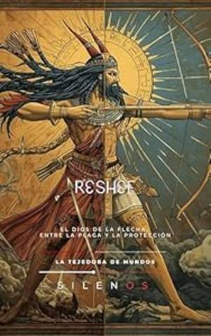

Biblioteca › Egipto › RESJEF: El Dios de la Flecha, entre la Plaga y la Protección (EGIPTO)EgiptoRESJEF: El Dios de la Flecha, entre la Plaga y la Protección (EGIPTO)♡ Añadir a favoritosLa Tejedora de Mundos (Silenos)SinopsisRESJEF: El Dios de la Flecha, entre la Plaga y la Protección (EGIPTO) (13 de noviembre de 2025)Enlaces de adquisiciónAMAZONPaísesEgiptoRegionesCanaánSiriaValle del NiloMenfisTanisPersonajesReshefSethMontuAstartéQeteshPalabras clavePanteón cananeoDeidad guerreraPesteArqueroSincretismoProtección divinaEnfermedades infecciosasMitología semítica← NEKHBET: El Vuelo del Buitre, de Creadora Cósmica a Maestra de la Profecía en el Nilo (EGIPTO)DJEHUTY: El Arquitecto del Cosmos, Maestro de la Magia y Heraldo de la Gnosis a Través de las Eras (EGIPTO) →